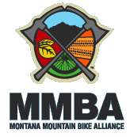

We've chosen some of the best cycling routes in Montana for your perusal. They're graded by difficulty and length, so you can find a short, easy ride that's just right for you and your family, or a longer multi-day adventure. Go to the index below for a list and description of the currently-available rides. We're adding more rides all the time, so check back before you throw your bikes on the rack and head for the Big Sky Country.
| Best Biking Trails in Montana | ||||
|---|---|---|---|---|
| Ride Name | Type | Location | Rating | |
| Alkali Creek | Mountain Bike | Billings | Moderate | Best riding in the Fall |
| Big Hole River | Road Bike | Dillion | Easy | |
| Clark Fork River Trail | Mountain Bike | St. Regis | Moderate | |
| Columbia Falls Out and Back | Road Bike | Columbia Falls | Easy | |
| Flint Creek Ramble | Road Bike | Deerlodge | Moderate | |
| Lake Koocanusa | Road Bike | Eureka/ Libby | Experienced | Best riding in the Spring |
| Pioneer Mountains/Crystal Park |
Road Bike | Wise River | Easy | |
| Red Rocks Lake WildLife Refuge |
Mountain Bike | Monida | Easy | |
| River's Edge Trail | Road Bike | Great Falls | Easy | |
| Two Moon Park | Mountain Bike | Billings | Easy | |
| Wolf Creek Foothills Loop |
Road Bike | Wolf Creek | Moderate | |
We've chosen some of the best cycling routes in Montana for your perusal. They're graded by difficulty and length, so you can find a short, easy ride that's just right for you and your family, or a longer multi-day adventure. Go to the index below for a list and description of the currently-available rides. We're adding more rides all the time, so check back before you throw your bikes on the rack and head for the Big Sky Country. (What, no bike? Check out these bicycle rental locations. )
| MMBA’s Mission: To preserve, protect, and promote mountain bike access and diverse riding opportunities on Montana's public lands through education, communication, and unified action. |